El pipeline paso a paso
Clasificador de félidos neotropicales: cada paso del diagrama de la pizarra con qué hicimos, por qué y qué resultado obtuvimos.
1Datos
El cilindro de la pizarra: el conjunto de entrada. Los tipos posibles son texto, series de tiempo, tabular o imágenes; el nuestro es imágenes.
Qué hicimos
- Usamos la exportación v2 del dataset classificador_felideos (Roboflow Universe, CC BY 4.0): train 680, valid 85, test 85.
- Especies: L. geoffroyi, L. pardalis, L. tigrinus, L. wiedii y P. onca.
- Unimos train + valid en un conjunto de desarrollo de 765 fotos para toda la validación cruzada. Las 85 de test se apartan y se usan una sola vez, al final.
- Antes de modelar, hicimos el EDA (sección 3 de la notebook).
Por qué v2
De las 4 exportaciones es la única a color con las 5 especies en todos los splits. v3 y v4 no tienen wiedii ni onca en valid/test, y la "segmentada" conserva el fondo. Además, las 4 versiones son las mismas fotos: mezclarlas habría metido fotos de test en el entrenamiento (fuga de datos).
Hallazgo del EDA
32 % de las fotos son infrarrojas (nocturnas, sin color), repartidas de forma desigual: ~50 % de pardalis y wiedii, solo ~16 % de onca.
| Pregunta del EDA | Respuesta |
|---|---|
| ¿Está balanceada? | Train sí (135–137 por especie). Valid/test no tanto (11–23) → usamos F1 macro |
| ¿Resolución? | Todas 450×450 (Roboflow las estiró: se pierde la relación de aspecto) |
| ¿Normalizada? | Píxeles en [0, 1], media ~0.42 y std ~0.23 por canal. Se normaliza con media/std de ImageNet antes de la red |
| ¿Fuga de datos? | No: 0 imágenes duplicadas (hash MD5) |
| ¿Estacionalidad / skewness? | No aplican a imágenes |
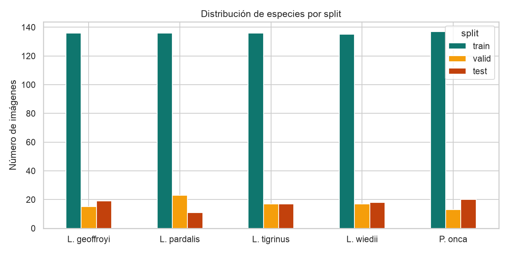
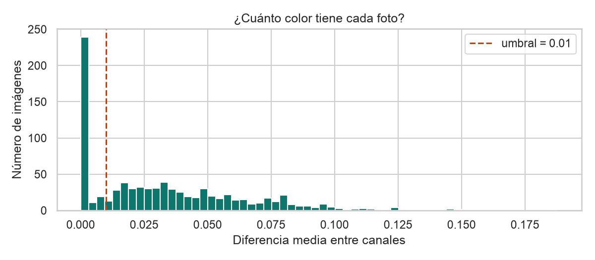
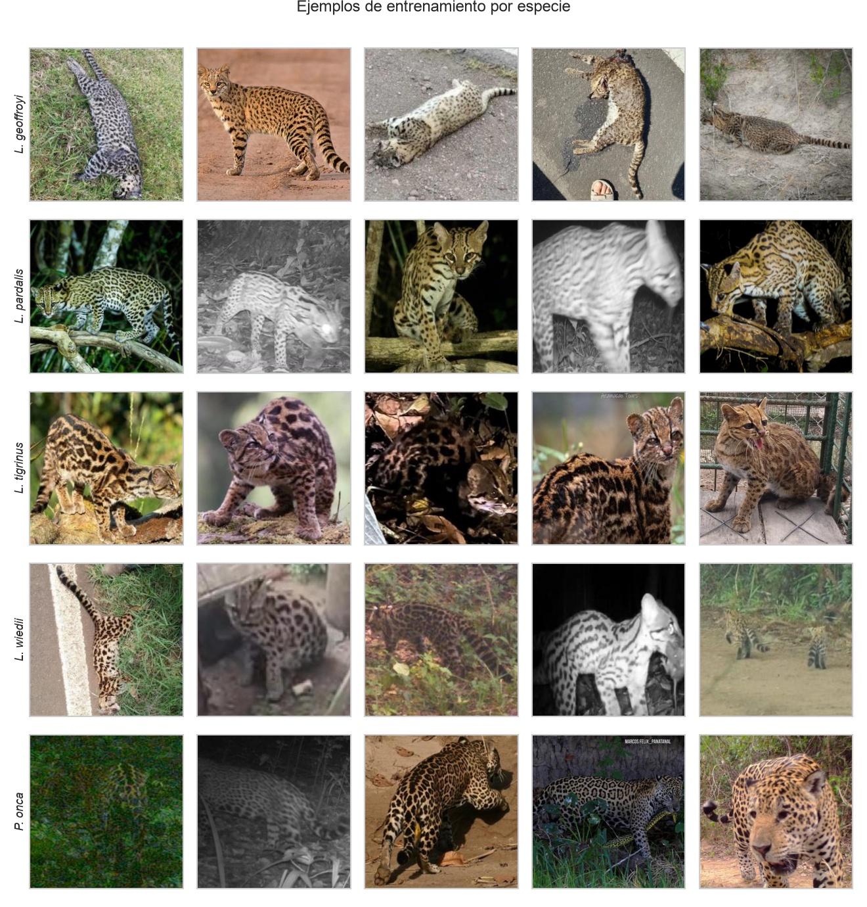
2Feature extraction
El embudo de la pizarra: convertir cada foto en números. Dos caminos: a) clásica (píxeles → PCA, HoG, SIFT) o b) transfer learning (una red ya entrenada; la pizarra menciona CLIP).
Qué hicimos: opción b, con ResNet50
foto → resize 224×224 → normalizar (ImageNet) → ResNet50 sin su última capa → vector de 2048
- ResNet50: red convolucional de 50 capas (He et al., 2015), preentrenada en ImageNet (~1.2 M fotos). Sus conexiones residuales permiten entrenar redes muy profundas.
- Se usa como extractor fijo: le quitamos la capa que elige entre las 1000 categorías de ImageNet y no se reentrena.
- Los vectores se calculan una sola vez (8.8 s para las 850 fotos en la GPU del Mac) y se guardan.
Por qué transfer learning
- Con 765 fotos, una red entrenada desde cero sobreajustaría.
- La ResNet50 ya sabe reconocer bordes, texturas y manchas: justo lo que distingue estos pelajes.
- El t-SNE lo confirma: con píxeles crudos las especies se mezclan; con la ResNet50 forman grupos.
¿Y CLIP?
Ambos son transfer learning. Elegimos ResNet50 por ser el estándar más documentado y fácil de defender. CLIP queda como plan B para probar otro extractor.
3Embedding (vector)
"emb" / "vector" en la pizarra: la salida del extractor, una huella numérica de cada foto.
Por qué importa
Desde aquí el problema deja de ser de imágenes y pasa a ser tabular: 850 filas (fotos) × 2048 columnas (características) + la especie (target). Todo lo que sigue usa scikit-learn sobre esa tabla.
Chequeo rápido
Sin optimizar (5-fold): SVM F1 macro 0.684, Random Forest 0.694. El azar sería 0.20, así que los vectores ya contienen información útil.
4Feature selection *
Quedarse solo con las características más útiles (p. ej. SelectKBest). En la pizarra lleva un asterisco y la nota "Tabular Data": solo aplica a datos tabulares.
Qué hicimos
Se omite, con la justificación escrita en la notebook (sección 5).
Por qué
- La rúbrica lo permite explícitamente con transfer learning o imágenes.
- Las 2048 características son densas y aprendidas: ninguna tiene significado propio ("la columna 734" no es "tiene manchas"). Filtrarlas una por una descartaría información que los modelos aprovechan en conjunto.
5Modelos
Los algoritmos que aprenden a predecir la especie a partir del vector. Bajo el óvalo, la pizarra dibuja la curva de optimización y las barras "→ Target" (la validación cruzada).
Pipeline
StandardScaler → clasificador
El escalador se ajusta dentro de cada fold, solo con los datos de entrenamiento de ese fold, así que no se filtra información del fold de validación. El mismo pipeline se usa en la optimización, la comparación y el test.
Los dos modelos
| SVM (kernel RBF) | Random Forest | |
|---|---|---|
| Idea | Frontera de máximo margen entre clases, en un espacio transformado por el kernel | Ensamble de árboles de decisión; vota la mayoría |
| Hiperparámetros | C (penalización), gamma (alcance del kernel) | n_estimators, max_depth, max_features |
| Por qué | Rinde bien con muchas dimensiones (2048) y pocos ejemplos | Familia muy distinta → la comparación es informativa |
Validación cruzada (las barras "→ Target")
RepeatedStratifiedKFold: 10 folds × 10 repeticiones = 100 evaluaciones por configuración.- Estratificado (cada fold mantiene la proporción de especies) y repetido (no depende de una sola partición).
- Misma semilla en todo el proyecto: los dos modelos se evalúan en exactamente los mismos folds.
- Métrica: F1 macro, para que todas las especies pesen igual.
Optimización de hiperparámetros (la curva de la pizarra)
GridSearchCV sobre el CV 10×10. Ante empates se eligió el modelo más simple (menor C, árboles menos profundos).
| Modelo | Mejores hiperparámetros | F1 macro | Tiempo |
|---|---|---|---|
| SVM | C = 100, gamma = 1e-4 | 0.776 ± 0.040 | 7.8 min |
| SVM con Optuna (extra) | C ≈ 21.6, gamma ≈ 1.4e-4 | 0.780 | 9.7 min |
| Random Forest | 500 árboles, max_depth = 20, max_features = 0.1 | 0.710 ± 0.047 | 36.5 min |
- SVM:
gammaes decisivo. Con valores grandes el modelo colapsa a una sola especie (F1 ≈ 0.07); congamma ≈ 1e-4yC ≥ 10llega a una meseta. Optimizar subió el F1 de 0.68 a 0.78. - Random Forest: la profundidad casi no importa a partir de 20;
max_features = 0.1es lo mejor. - Optuna encontró prácticamente lo mismo que la grilla (+0.004).
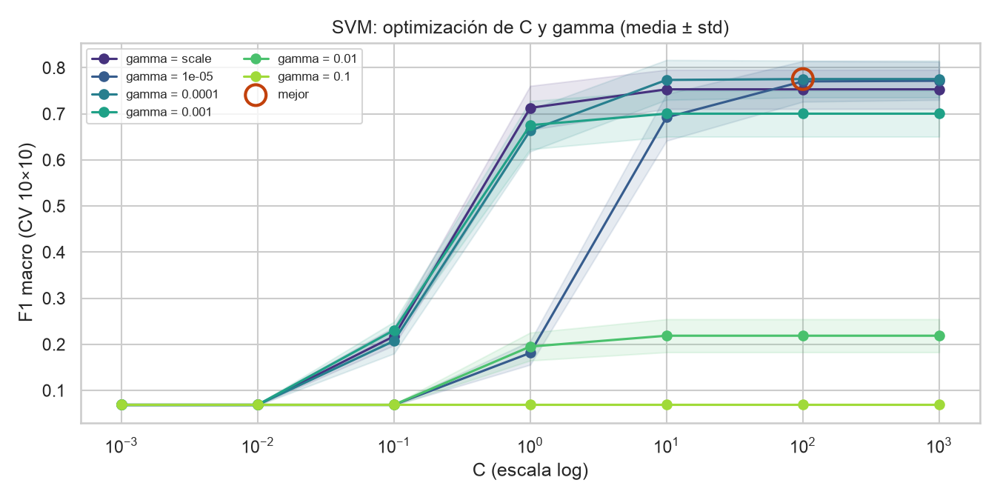
C y gamma.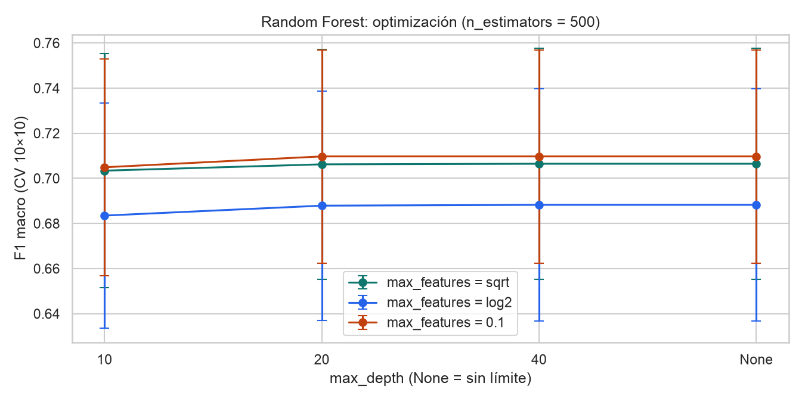
max_depth y max_features.Curvas de aprendizaje
Varianza alta
Ambos modelos sacan F1 = 1.0 en entrenamiento y el F1 de validación sigue subiendo al agregar fotos (SVM: 0.50 con 70 fotos → 0.78 con 690). Con más datos el modelo mejoraría. El SVM está por encima del RF en todos los tamaños.
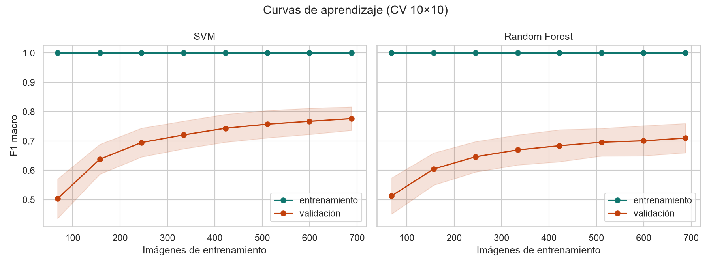
6Comparación estadística: SVM vs. Random Forest
Ambos modelos optimizados, evaluados en los mismos 100 folds, con todas las métricas que pide la rúbrica.
| Métrica (CV 10×10) | SVM | Random Forest |
|---|---|---|
| Accuracy | 0.775 | 0.712 |
| Precision macro | 0.787 | 0.719 |
| Recall macro | 0.776 | 0.713 |
| F1 macro | 0.775 | 0.710 |
| F1 weighted | 0.774 | 0.708 |
| AUC ROC macro | 0.949 | 0.928 |
| AUC ROC micro | 0.956 | 0.934 |
Test de hipótesis
H₀: no hay diferencia en F1 macro entre SVM y RF. α = 0.05.
| Test | Resultado | Conclusión |
|---|---|---|
| Shapiro–Wilk sobre las diferencias | p = 0.20 | No se rechaza la normalidad |
| Wilcoxon pareado | W = 58, p = 2.2 × 10⁻¹⁷ | Se rechaza H₀ |
| t-test corregido (Nadeau–Bengio) | p = 3.4 × 10⁻⁵ | Se rechaza H₀ |
Resultado
El SVM es mejor: +0.066 de F1 macro y gana en 93 de 100 folds.
Por qué estos tests
Wilcoxon: los scores están pareados (mismos folds) y no exige normalidad. t corregido: los folds de un CV repetido no son independientes, lo que hace optimistas a los tests clásicos; este lo compensa y la conclusión se mantiene.
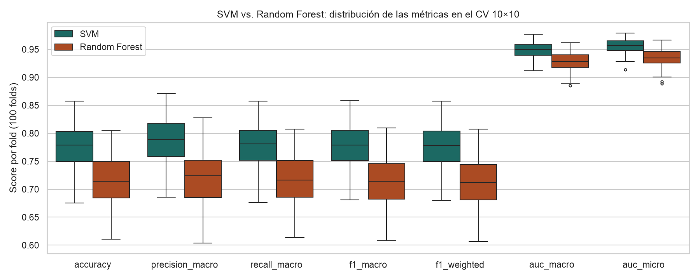
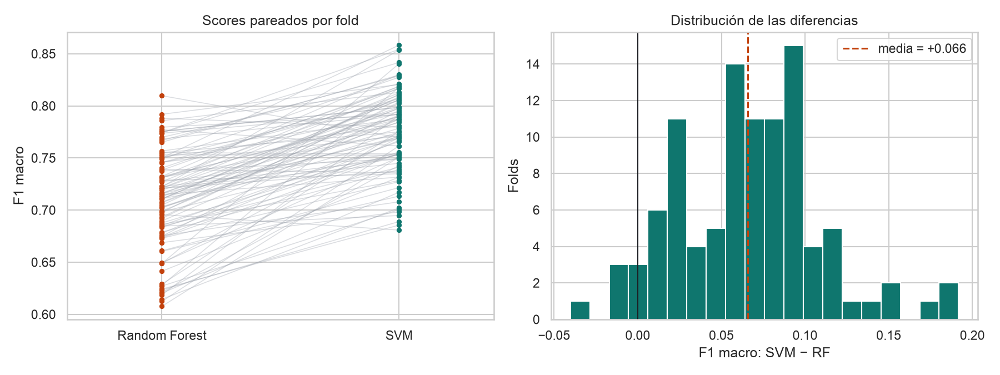
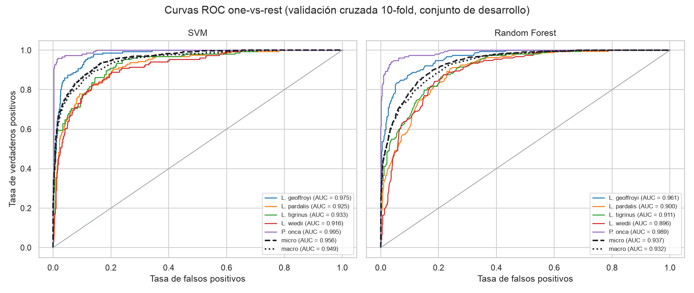
7Evaluación final en test
Ambos modelos se reentrenan con las 765 fotos de desarrollo y se evalúan una sola vez en las 85 de test.
| SVM | Random Forest | |
|---|---|---|
| Aciertos | 65 / 85 (0.765) | 68 / 85 (0.800) |
| F1 macro | 0.749 | 0.786 |
| AUC macro | 0.940 | 0.943 |
En test gana el RF, pero por 3 fotos. Los modelos solo discrepan en 11 fotos (7 a favor del RF, 4 del SVM) y el test de McNemar da p = 0.55: no es significativo. Con 85 fotos no se pueden distinguir modelos tan cercanos; la evidencia fuerte es el CV de 100 folds.
- El SVM en test (0.749) es coherente con su CV (0.775): no hubo sobreajuste al elegir hiperparámetros.
- Por especie: L. geoffroyi (F1 = 1.0) y P. onca (0.95) casi sin errores; las confusiones se concentran en wiedii ↔ tigrinus ↔ pardalis.
- Fotos infrarrojas: el SVM acierta el 82.7 % de las fotos a color y solo el 67.5 % de las infrarrojas.
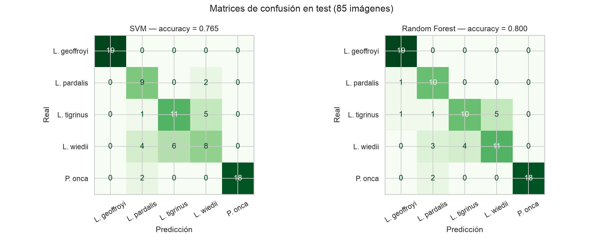
8Visualización con t-SNE
Proyecta los vectores de 2048 dimensiones a 2D intentando conservar qué fotos son vecinas, para ver si las especies forman grupos. Se aplicó a los vectores de la ResNet50 y, como contraste, a los píxeles crudos, con perplexity 15, 30 y 50.
- Con ResNet50 hay grupos; con píxeles crudos, todo mezclado. Es la justificación visual del transfer learning.
- P. onca forma un grupo aparte, coherente con su AUC de 0.995.
- wiedii y pardalis están dispersas y mezcladas: son las más confundidas.
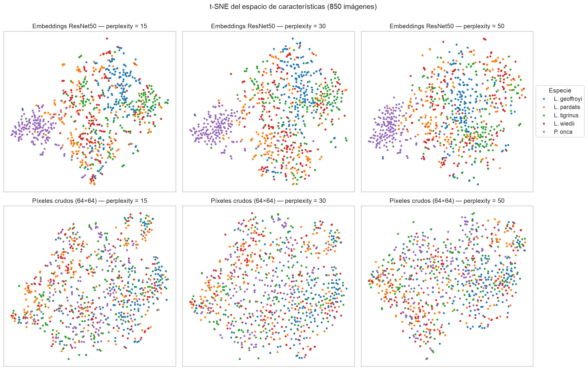
Hallazgo clave: coloreando por tipo de foto, las infrarrojas forman su propia isla. La ResNet50 separa primero día/noche y después la especie. Eso explica por qué las fotos nocturnas se equivocan más.
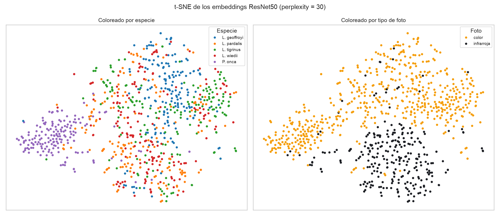
9Experimento extra: ¿importa el color?
El mismo pipeline (ResNet50 → SVM) con las fotos a color y con las mismas fotos convertidas a gris en código. Mismos folds, SVM reoptimizado para gris, y F1 calculado aparte para fotos a color e infrarrojas.
| Fotos evaluadas | Color | Gris | Diferencia |
|---|---|---|---|
| Todas | 0.775 | 0.767 | +0.008 |
| Solo fotos a color | 0.794 | 0.768 | +0.026 |
| Solo fotos infrarrojas | 0.650 | 0.684 | −0.034 |
Resultado
En total, el color casi no importa (+0.008). El Wilcoxon lo marca significativo (p = 0.02), pero el t corregido no (p = 0.54): el efecto es mínimo y no robusto. La información principal es el patrón de manchas.
De día ayuda, de noche estorba
En fotos a color gana el color (sobre todo wiedii +0.09 y tigrinus +0.06). En infrarrojas gana el gris, porque con todo en gris las fotos nocturnas dejan de ser un grupo aparte. La exportación gris de Roboflow da lo mismo (0.763) que el gris hecho en código (0.771).
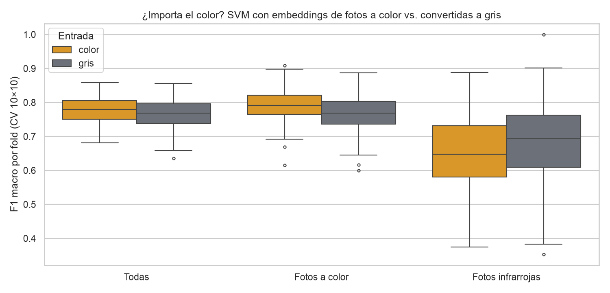
Resumen en una diapositiva
| Paso | Decisión | Resultado |
|---|---|---|
| 1. Datos | v2, 850 fotos a color; 765 desarrollo + 85 test | 32 % de fotos infrarrojas |
| 2. Feature extraction | Transfer learning con ResNet50 (fija) | Los píxeles crudos no separan especies; la ResNet sí |
| 3. Embedding | Vector de 2048 por foto | Problema tabular 850 × 2048 |
| 4. Feature selection | Omitida (solo aplica a tabular) | — |
| 5. Modelos | SVM vs. RF, GridSearchCV con CV 10×10, F1 macro | SVM 0.776 vs. RF 0.710 |
| Comparación | Wilcoxon + t corregido | SVM mejor (p ≈ 10⁻¹⁷); gana 93/100 folds |
| Test | Una sola evaluación, 85 fotos | RF +3 fotos, no significativo (McNemar p = 0.55) |
| t-SNE | ResNet vs. píxeles; por especie y tipo de foto | La red separa día/noche antes que especie |
| Color vs. gris | Mismo pipeline, mismas fotos en gris | El color casi no importa (+0.008) |
Conclusión: con transfer learning y un SVM se logra un F1 macro de ~0.78 en 5 especies con solo 765 fotos. Los principales límites son las fotos nocturnas y las especies de pelaje parecido, y las curvas de aprendizaje indican que más datos mejorarían el modelo.